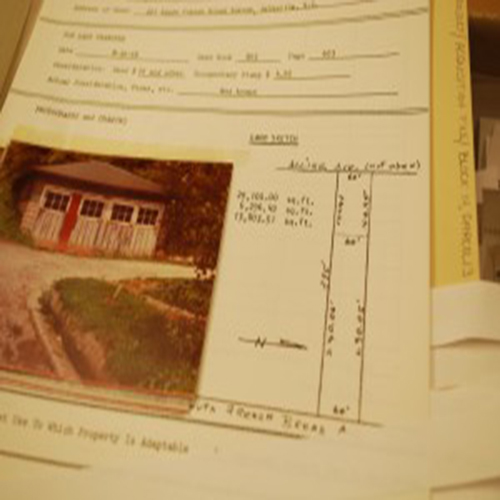

What is Making Data Matter?
A community’s capacity for kindness acts as a powerful antidote against some of the most vicious pressures of poverty. We think big data can help fan that kindness. Making Data Matter is a platform for community members to share stories about, among other things, the thick ropes of kindness that connected people living in the Southside neighborhood prior to urban renewal of the 60s and 70s.

Hey, that's pretty cool. How can I help?
We have some data already, but we need your help documenting personal stories about urban renewal and how it has affected you, your family, or your neighbors. Participate in discussions with other community members on our discussion boards to engage in the material. Find and update information about your current or former home. Think of Making Data Matter as a Wikipedia of Asheville, filled with stories told by the people who lived them.